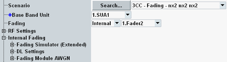

Internal Fading
This branch of the configuration tree is only visible, if a fading scenario is selected and the fading source is set to "Internal".
For general prerequisites/required options and background information, see "Internal Fading".

Internal fading settings